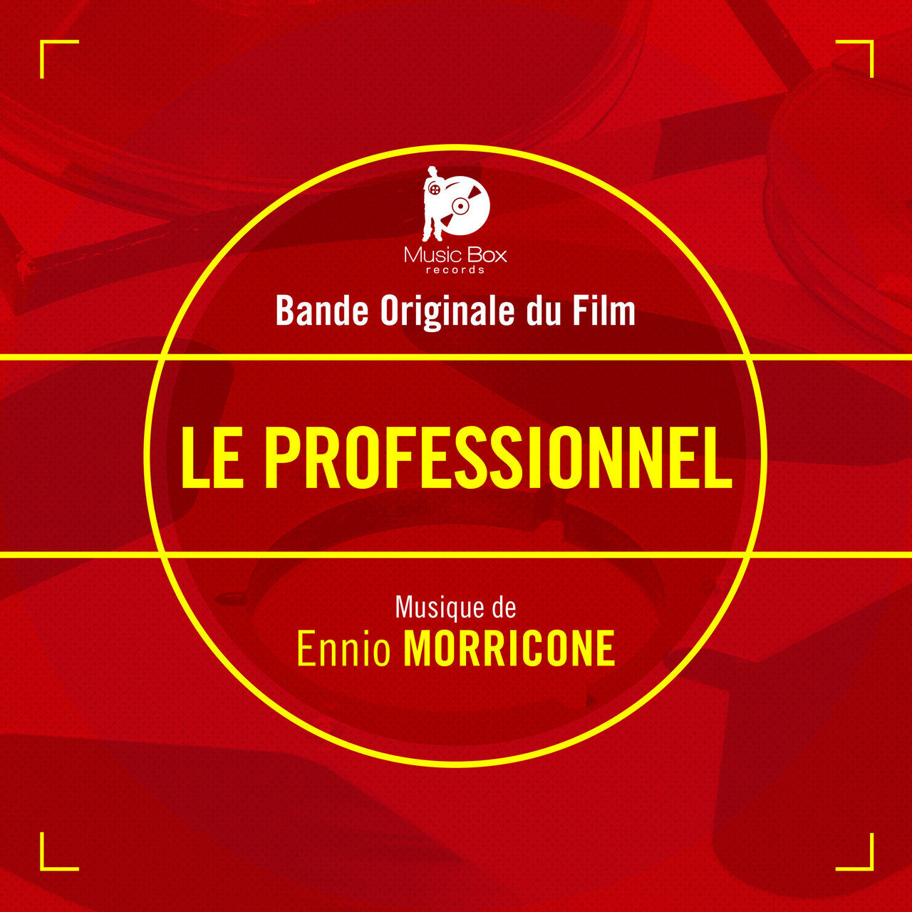

이 지면은 8월 5일 자정에 아카이브로 이관됩니다

Ennio Morricone
장 폴 벨몽도 주연의 프렌치 누아르 ‘르 프로페셔널(Le Professionnel)’의 메인 테마 ‘Le Vent, Le Cri(바람, 외침)’는 영화 음악의 거장 엔니오 모리코네가 작곡한 곡입니다. 쓸쓸한 바람처럼 시작해 점차 강렬하게 울려 퍼지는 오케스트라의 서정적이면서도 비장한 선율이 깊은 여운을 남깁니다. 함께 삽입된 ‘Chi Mai’와 더불어 모리코네 최고의 프렌치 스코어 중 하나로 평가받으며, 발매 후 수십 년이 지난 지금도 시대를 초월한 명곡으로 사랑받고 있습니다.